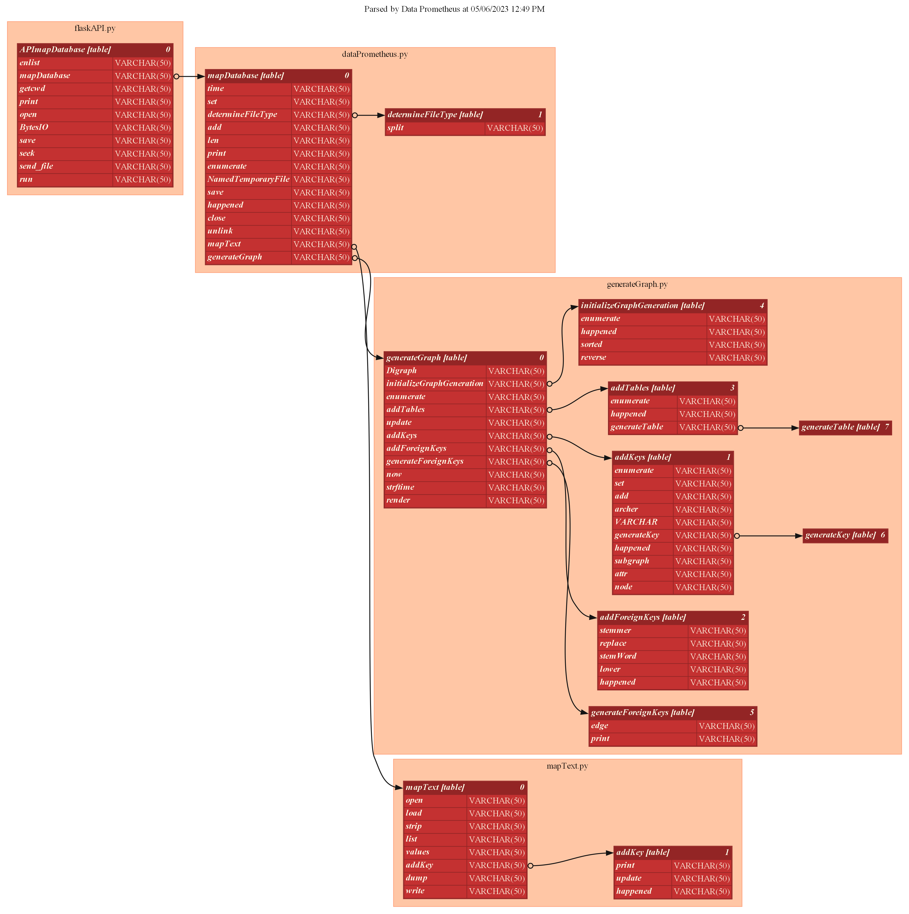

Hey, my name is
Daniel Harnden.
I'm an aspiring software engineer with a Bachelor's degree in Computer Science with a concentration in Data Science from Tennessee Technological University, awarded May 2023. I have also been awarded a GED and Associates degree from Florida Southwestern State College's Dual Enrollment program in May 2019, as well as the honor of Eagle Scout in November 2019.
I'm currently looking for an entry-level position as a Software Engineer at a company that will allow me to contribute to its development and allow me to grow my technical skills.
Skills:
ASM, C, C++, C#, CSS, HTML, IPython Notebook, Java, JavaScript, Python
Data Prometheus
An expanded version of my capstone project, Data Prometheus is an automatic database mapping and merging tool that has two main functions:
- Map databases without primary and foreign key relations
- Combine two or more databases into a singular primary database
Data Prometheus then saves the newly generated database and returns a schema image of that new database. The program was written in Python and uses Docker containers of ReactJS to host the Frontend and SchemaCrawler to crawl inputted databases and generate graph images.
Below is a very simplified example of a database being joined. The first image is the database pre-processing. The tables share three keys, though there are no foreign key relationships between them, making the tables indepedent of each other. Post-processing, RecordKey key in the moonbuggy_users table is identified as a foreign key of RecordKey in past_volunteers.

↓

Data Prometheus is not just limited to database files. Below are the functions and function calls of the four main Data Prometheus Python files. The order of function calls and the relationships present between each file are clearly defined.
Currently, Data Prometheus only supports SQL, SQLite, and Python files as input. In the future, other programming and database languages are planned to be added.
More examples of Data Prometheus processing be found here.
The Data Prometheus repository can be found here.
Real-Time Train Crowding Forecast
A project for my Advanced Data Science class, Real-Time Train Crowding Forecasting uses historical data provided by SNCR-Transilien, a French transit company, to predict a given train's crowding factor, which is defined as the ratio of pasengers on a train relative to its total possible capacity.
This was a group project between myself, Marc Ebersberger, and Shelby Smith. Our supervised machine learning algorithm uses the crowding factor of previous trains at the current station and the crowding factor of the current train at previous stations to predict train occupancy rates in real time.
Personally, I worked on cleaning the given data, attempted various Regression models, and finalized the Deep Neural Network started by Shelby Smith.
My group's research was presented at Tennessee Technological University's 2023 Research and Creative Inquiry Day, and our code can be found here. The poster we presented at Research Day is below (click to view a larger version).

Additional Work
I am an Eagle Scout who spent seven years in the Scouting program. During my time with the Scouts, I performed various leadership roles including project management, organizing and teaching children ages eight to sixteen, leading a group of eight scouts for three years, and assisting in hundreds of hours of community service projects.
I like to make games in my free time using Unity and C#. Many of my game demos are either unfinished or under construction spanning various genres including 2D platformers, point and click visual novels, and first person shooters.
One of my public demos is Clippy Commando, a twin stick shooter made for itch.io's "Jame Gam #18" game jam. You can view the source code here.
I also like to do creative writing in my free time. The only public story right now is Memories of the Bean Times, a story about monsters made of baked beans attacking medieval Europe. It's around 100,000 words and still ongoing. To make the story public, I created a website using HTML, CSS, and JavaScript, and am hosting it using GitHub Pages. You can find the source code here.